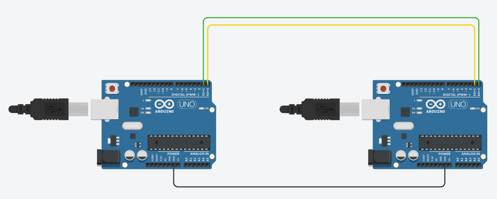

Serieel betekent dat de bits van je boodschap één voor één over één draad gaan, in plaats van allemaal tegelijk over acht draden. Dat is traag, maar je hebt er bijna geen draden voor nodig, en daarom zit het op zowat elk apparaat.
Je gebruikt dit kanaal al sinds labo 0. Telkens je Serial.println() schreef om te debuggen, ging die tekst serieel over de USB-kabel naar je pc. Aan de andere kant van dat kanaal kan evengoed een tweede Arduino hangen in plaats van een pc.
Om twee Arduino's met elkaar te laten praten heb je drie verbindingen nodig.
| Draad | Waarvoor |
|---|---|
| Tx (transmit) | Hierlangs zendt de Arduino. Alles wat je met Serial.print() schrijft, komt hier buiten. |
| Rx (receive) | Hierlangs ontvangt de Arduino. Alles wat hier binnenkomt, kan je met Serial.read() ophalen. |
| GND | De gemeenschappelijke massa. Zonder die draad heeft "hoog" bij de ene Arduino geen betekenis voor de andere. |
Wat de ene zendt, moet de andere ontvangen. De Tx van Arduino 1 gaat dus naar de Rx van Arduino 2, en de Tx van Arduino 2 naar de Rx van Arduino 1. Verbind je Tx met Tx, dan hangen twee zenders aan elkaar en blijft elke ontvanger onaangesloten.

Op de Arduino UNO zijn Rx en Tx de eerste twee digitale pinnen. Kijk maar naar het opschrift op de print, daar staat RX←0 en TX→1.
Daarom heb je die twee pinnen in alle vorige labo's nooit gebruikt voor een led of een knop. Ze zijn bezet.
De USB-poort waarlangs je een programma uploadt, hangt op precies dezelfde Rx en Tx. Op een echte Arduino mislukt het uploaden dus zolang er draden op pin 0 en 1 zitten. Trek die twee draden er uit, upload je programma, en steek ze daarna terug.
In TinkerCAD heb je daar geen last van, want daar is er geen echte USB-kabel. Onthoud het toch voor de dag dat je dit op een echte Arduino bouwt.
De baudrate is het aantal bits per seconde dat over de lijn gaat. Bij Serial.begin(9600) zijn dat er 9600. Er loopt geen kloksignaal mee over de draad, dus de ontvanger gaat ervan uit dat de bits aan het afgesproken tempo binnenkomen.
Staan de twee kanten niet op dezelfde baudrate, dan meet de ontvanger op de verkeerde momenten en krijg je onleesbare tekens, net zoals wanneer je seriële monitor op een andere snelheid staat dan je Serial.begin().
void setup()
{
Serial.begin(9600); // exact dezelfde waarde in beide programma's
}Het onderdeel dat dit werk doet, heet een UART: universal asynchronous receiver-transmitter. Het zit in je ATmega328P ingebouwd, naast het geheugen en de timers. Jij geeft er met Serial.print() een byte aan, en de UART schuift die bits daarna zelf een voor een naar buiten op het afgesproken tempo, terwijl je loop() gewoon verder draait. Aan de overkant doet een tweede UART het omgekeerde: die vangt de bits op, zet ze terug samen tot een byte en houdt ze bij tot jij Serial.read() doet. De a van asynchroon is wat hierboven staat: er loopt geen klok mee over de draad, dus telt elke UART zijn eigen tijd af en moeten beide kanten op dezelfde baudrate ingesteld staan.
Zowat elke microcontroller heeft er minstens één aan boord, en veel grotere chips hebben er drie of vier. De modules die je erop aansluit gebruiken dezelfde manier van praten: gps-ontvangers, bluetoothmodules, vingerafdruklezers, 4G-modems en heel wat sensoren hebben geen andere aansluiting dan een TX, een RX en een massa. Wat je hier tussen twee Arduino's legt, is dus ook de manier waarop je later zo'n module aan je Arduino hangt.
Ook in afgewerkte apparaten blijft die aansluiting zitten. Open je een router, een decoder of een industriële sturing, dan vind je op de print vaak vier contacten op een rij, soms met een header erin en meestal zonder. Daar hangt de fabrikant een kabel aan om te volgen wat het toestel doet terwijl het opstart, en om erbij te kunnen wanneer het scherm of het netwerk niets meer geeft. Zo'n verbinding heeft genoeg aan één draad per richting en een gemeenschappelijke massa, en werkt zonder driver en zonder netwerk.
In de video hieronder wordt zo'n aansluiting op een echt toestel opgezocht en aangesloten, tot de opstartboodschappen binnenlopen. De video is Engelstalig.
De seriële monitor hangt aan diezelfde Tx-lijn. Alles wat je naar de andere Arduino stuurt, zie je dus ook in je eigen monitor verschijnen. Dat is handig, want zo zie je wat je verstuurt.